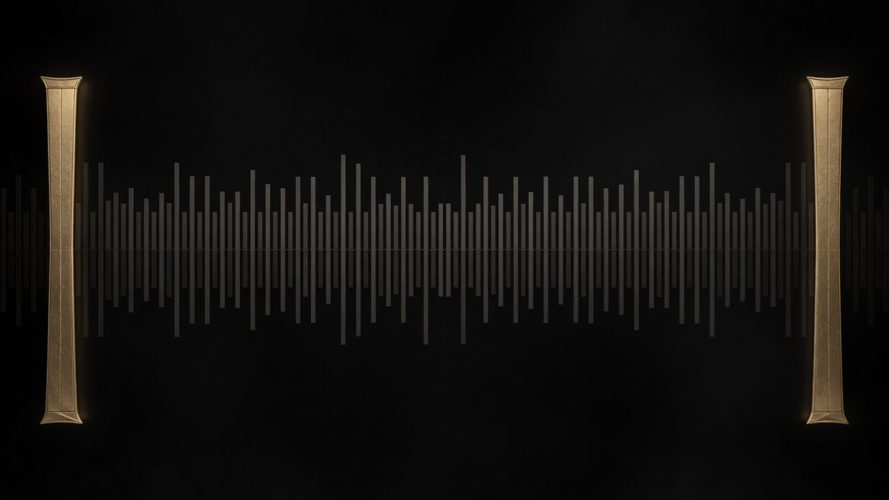
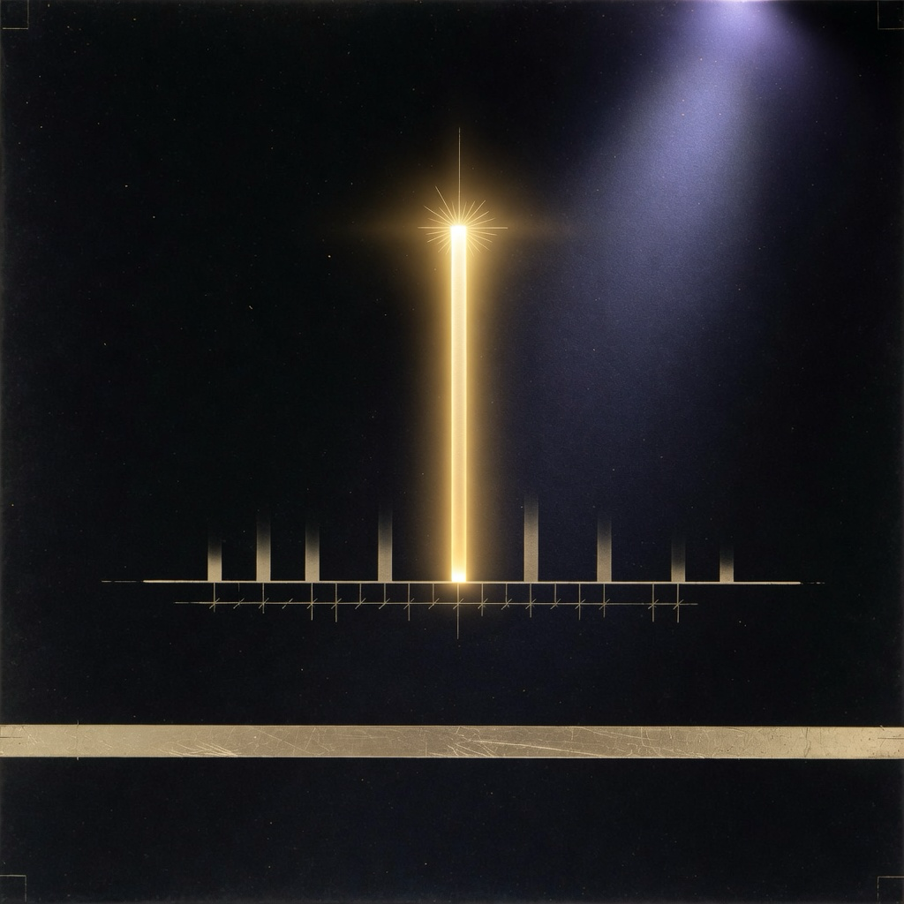
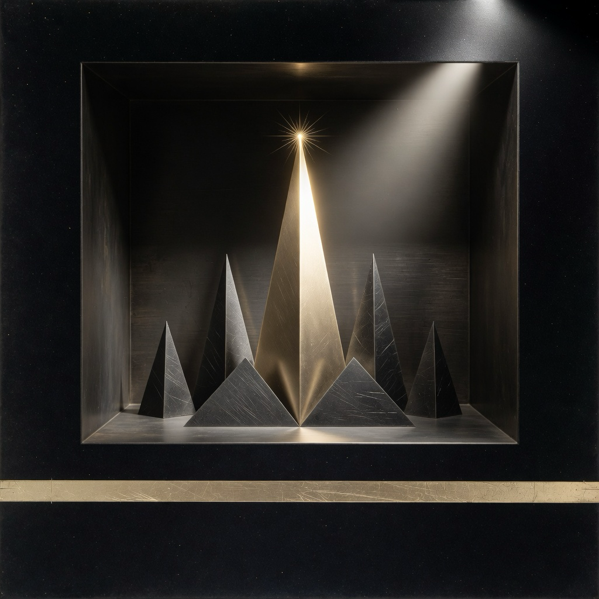
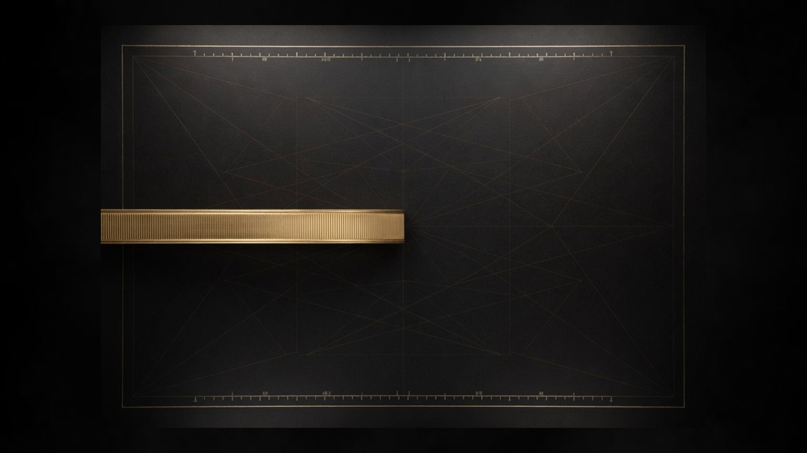
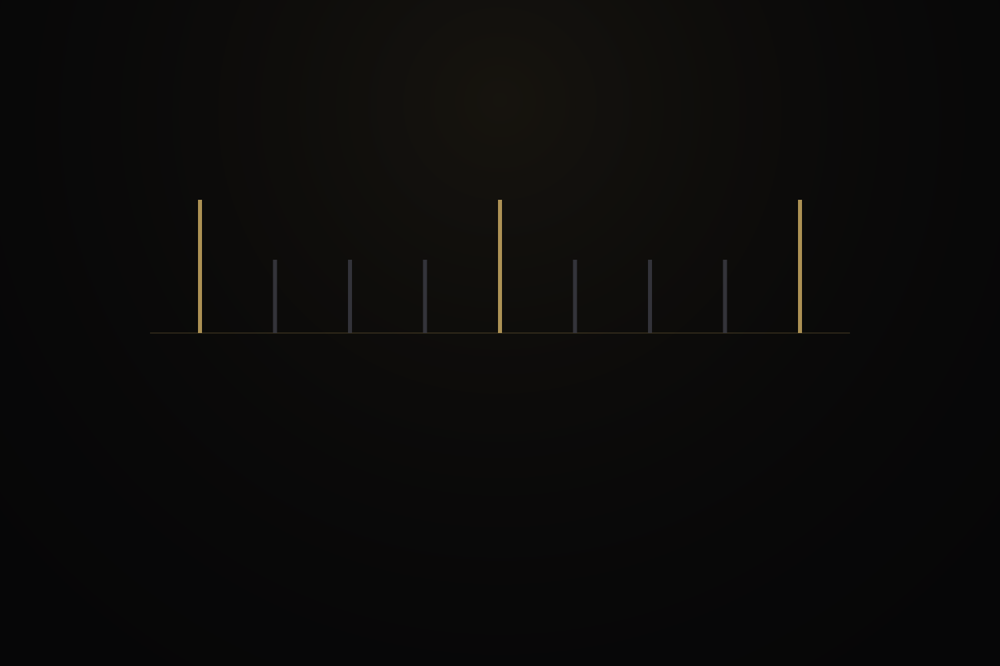
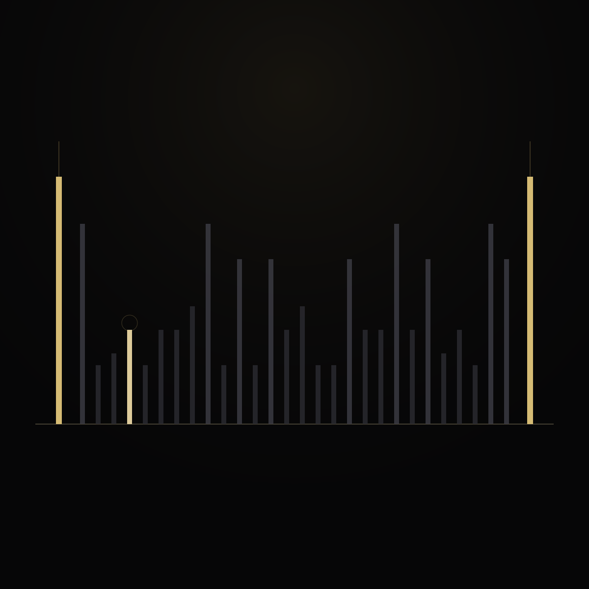
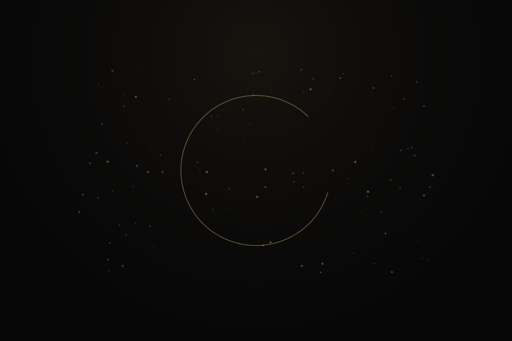
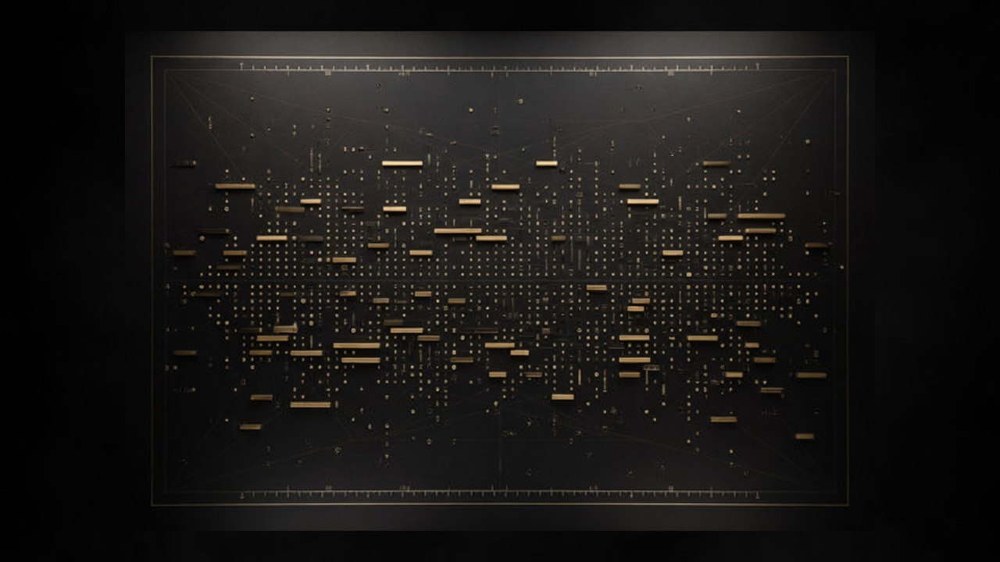
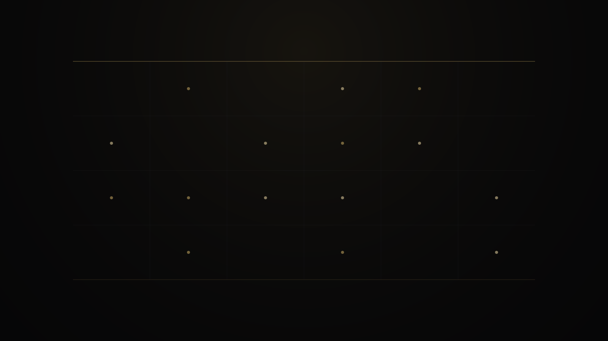

Next prime from structure
Given a known prime, exact divisor counts on the integers after it determine the next prime.
A public course in structure, not chance
Prime Gap Structure is a research program about what sits between consecutive primes: the ordered chamber of composites, the way divisor counts mark that chamber, and the deterministic laws that name the next prime.

Given a known prime, exact divisor counts on the integers after it determine the next prime.
Inside a nonempty gap, one interior integer is selected by a leftmost minimum-divisor rule.
That selected witness cannot sit arbitrarily far from the left prime. The bound is on the witness offset.



How to read this course

The main text is a museum guide: plain objects first, then the mechanism, then the name.
When a section can go deeper without changing claim status, open a Deeper panel. Full teaching captions under every plate keep the gallery readable.
Interactive map
A known prime is the only required start. Nothing is sampled at random.
Full public atlas
The open stretch between consecutive primes.
Divisor counts and leftmost minimum selection.
Three universal pillars, stated carefully.
Known prime in, next prime out.
Endpoint chains and residual honesty.
Measured regimes, exact and labeled.
Names after objects.
What is live, measured, and open.



Research source

